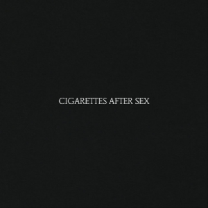
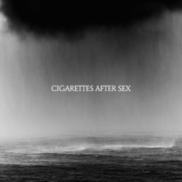

Cigarettes After Sex is an American dream pop band formed in El Paso, Texas, in 2008 by Greg Gonzalez. The band is known for their ethereal, limerent and often dream-like musical style, lyrics often based on the themes of romance and love, as well as Gonzalez's voice, which has been described as "androgynous".[7] While marketed as an ambient pop band, Cigarettes After Sex are also considered to be shoegaze, slowcore and indie rock.
The band's debut extended play (EP), I., was released in 2012, with the song "Nothing's Gonna Hurt You Baby" eventually becoming a sleeper hit through commercial licensing. After the release of the standalone single "Affection" in 2015, the band released their self-titled debut studio album in June 2017 to positive reviews. The band's second studio album, Cry, was released on October 25, 2019.
Apocalypse
"Apocalypse" is a song by American band Cigarettes After Sex, released as the second single from their debut album Cigarettes After Sex on March 27, 2017.[2] It was written and produced by vocalist Greg Gonzalez. It did not chart internationally until 2022, following its use in TikTok trends.[3] The song, as of November 26, 2023, has amassed over 1 billion streams on Spotify. Gonzalez was inspired to write the song after he and two women he had dated had "big ambitions" but were "stuck" in their hometown, which felt "impossible" to get out of. Gonzalez then moved to New York City, but the two women remained in their hometown. He said the song is ultimately "about being there for people, when you're all alone. It was like a little affectionate statement to them."
Albums


Cigarettes After Sex is the debut studio album by American ambient pop band Cigarettes After Sex. It was released on June 9, 2017, by Partisan Records and received positive reviews from critics. It has 10 tracks which are K., Each Time You Fall in Love, Sunsetz, Apocalypse, Flash, Sweet, Opera House, Truly, John Wayne and Young & Dumb. Cry is the second studio album by American ambient pop band Cigarettes After Sex, released through Partisan Records on October 25, 2019. It was preceded by the single "Heavenly". It has 9 tracks which are Don't Let me Go, Kiss It Off Me, Heavenly, You're the Only Good Thing in My Life, Touch, Hentai, Cry, Falling in Love and Pure.